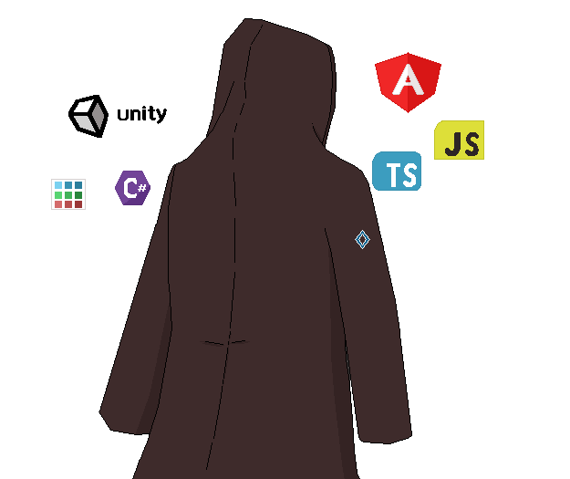

<section id="aboutMe" class="about">
    <div class="about__container">
        <div class="about__title-container">
            <title-blueprint class="about__title" color="var(--darkVariantBlue2)" title="About Me"></title-blueprint>
        </div>
        <div class="about__secondaryContainer">
        <div class="about__text">
            <h4><strong>I love building stuff</strong></h4>
            <p class="about__description">
                I actually never thought i would end up being a developer.
                 But through college and personal projects i did in private like :
                <strong>Pixel Art</strong>, <strong>Making Games</strong>, and ofcourse <strong>Designing and building</strong> my own <strong>Sites</strong>
                i fell in love with it. 
            </p>
            <default-button text="Read More"></default-button>
                <!-- <p>Have made a protype game in GameMaker Studio 2, and am working on a proper game in Unity.<br>
                    A sneek peak can be seen on one of my sites "site.link.here"<br>
                    Apart from that, i am exercising Savate since recently, and love nature and life
                </p> -->
        </div>
    <div class="about__imgContainer">
        
    </div>
</div>
    </div>
</section>